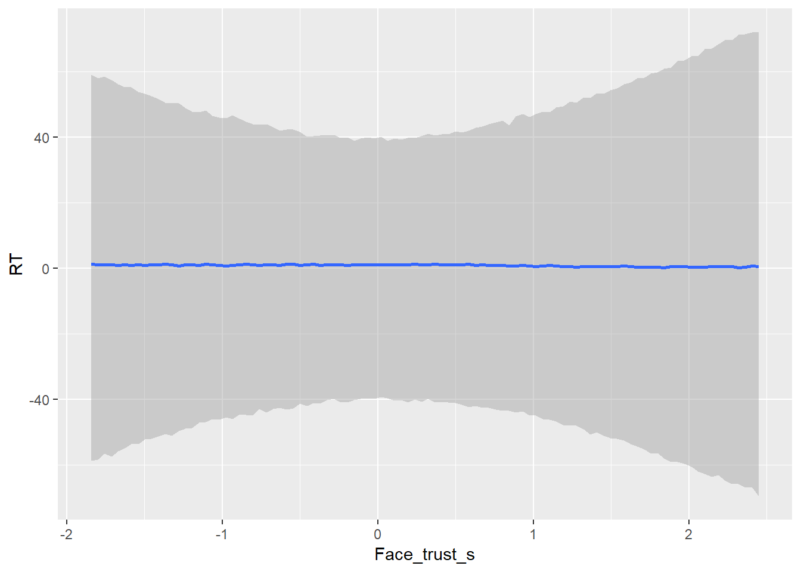
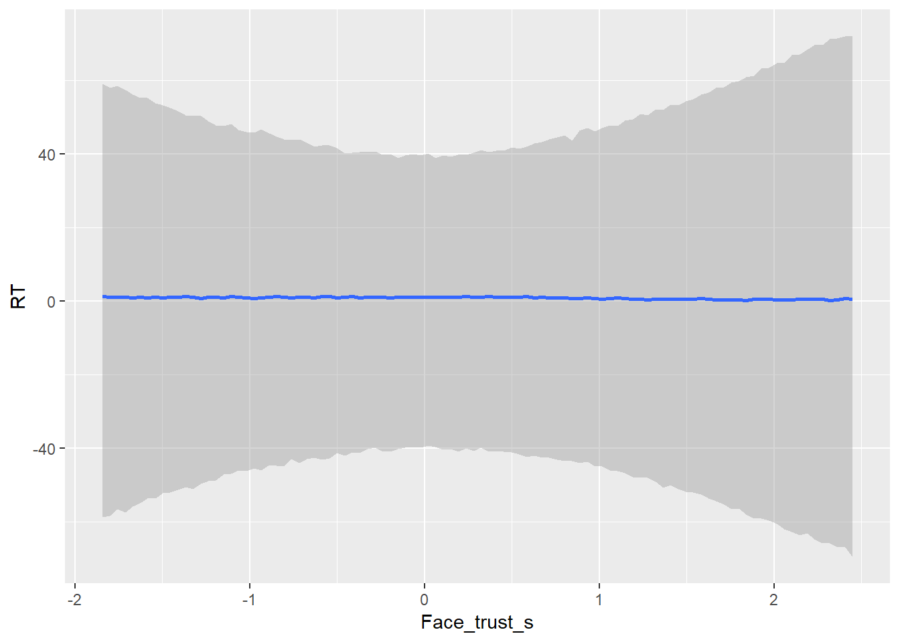
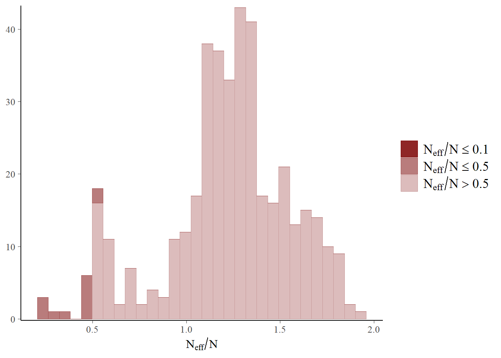
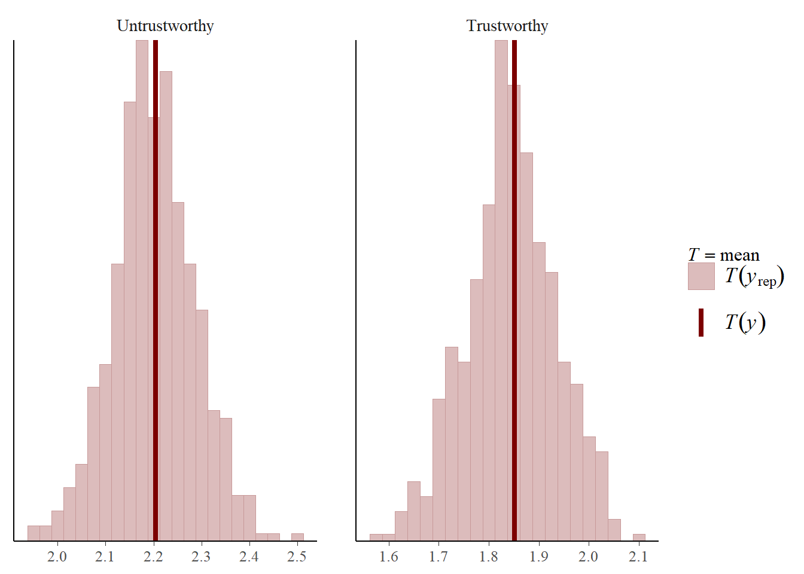
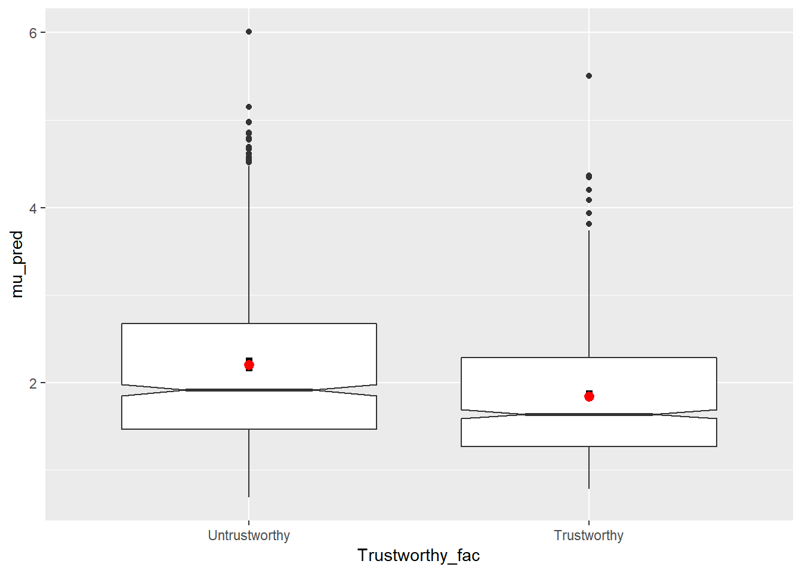
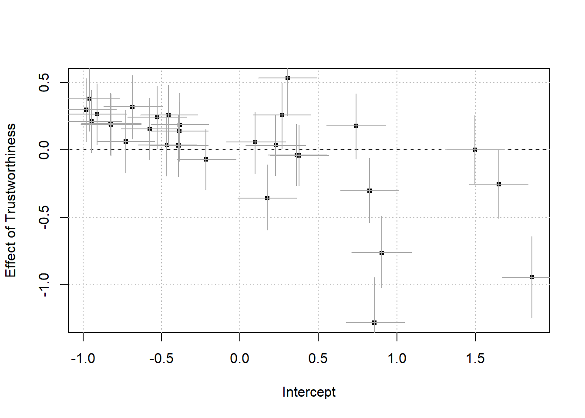

mlm-workshop
Philip
1 december 2018
Load data and packages
library(brms)
library(ggplot2)
library(bayesplot)
library(tidyverse)
library(kableExtra)
library(bayesplot)
library(brmstools)#set up number of cores to use for fitting
n_cores <- parallel::detectCores()-1d <- read.delim(url("https://raw.githubusercontent.com/philipparnamets/mlm-workshop/master/data/d_export.txt"))summary(d)## Subject Stimuli Trustworthy Face_trust
## Min. :13712 Min. : 1.00 Min. :-0.5 Min. :2.806
## 1st Qu.:14293 1st Qu.:16.00 1st Qu.:-0.5 1st Qu.:3.168
## Median :14767 Median :32.00 Median : 0.0 Median :3.360
## Mean :15343 Mean :32.45 Mean : 0.0 Mean :3.411
## 3rd Qu.:16425 3rd Qu.:49.00 3rd Qu.: 0.5 3rd Qu.:3.593
## Max. :17668 Max. :64.00 Max. : 0.5 Max. :4.214
## RT
## Min. : 0.3360
## 1st Qu.: 0.9178
## Median : 1.3837
## Mean : 2.0278
## 3rd Qu.: 2.3334
## Max. :32.7068Data comes from a trust learning experiment and represents a subset of 30 participants. Each participants did 30 trials with social partners from a trustworthy group and 30 trials with social partners from an untrustworthy group.
The aim of the analysis will be to understand if participant response times differ between groups.
Data visualization and preparation
Relationship between RT and Trustworthiness
# create factor
d$Trustworthy_fac <- factor(d$Trustworthy, labels = c("Untrustworthy",
"Trustworthy"))
# summary table
d %>% group_by(Trustworthy_fac) %>%
summarise(Average = mean(RT),
Median = median(RT),
SD = sd(RT),
SE = SD/sqrt(n())) %>%
kable(.) %>%
kable_styling(., bootstrap_options = c("striped", "condensed"),
full_width = F)| Trustworthy_fac | Average | Median | SD | SE |
|---|---|---|---|---|
| Untrustworthy | 2.204422 | 1.498379 | 2.369325 | 0.0789775 |
| Trustworthy | 1.851272 | 1.280572 | 1.815688 | 0.0605229 |
# plot
ggplot(data = d) +
aes(x = Trustworthy_fac, y = RT,
fill = Trustworthy_fac) +
geom_violin() +
geom_boxplot(fill="gray",
notch = T ,
width = 0.4) 
Lot’s of outliers, let’s filter the data at 10s, which seems to be plenty to make a response anyways..
# plot
d %>% filter(RT<10) %>%
ggplot(data = .) +
aes(x = Trustworthy_fac, y = RT,
fill = Trustworthy_fac) +
geom_violin() +
geom_boxplot(fill="gray",
notch = T ,
width = 0.4) Response time data are skewed:
ggplot(d) +
aes(RT) +
geom_histogram(binwidth = 0.25)
One way of dealing with this is log-transforming the data.
# log transform
d$RT_log <- log(d$RT)
#plot
ggplot(d) +
aes(RT_log) +
geom_histogram(binwidth = 0.1)
Face trustworthiness
The variable Face_trust captures how trustworthy the face of the partner has been rated to be.
ggplot(d) +
aes(Face_trust) +
geom_histogram(binwidth = 0.1)# scale variable
d$Face_trust_s <- scale(d$Face_trust)Setting up the model
There are three important components to fitting a model in brms:
- Data
- Model formula
- Prior
We have already set up our data.
Model formula
brms uses the same syntax as lme4, which simplifies the transition.
ff <-
bf(RT ~ 1 + Trustworthy + Face_trust_s + Trustworthy:Face_trust_s +
(1 + Trustworthy + Face_trust_s + Trustworthy:Face_trust_s | Subject) +
(1 + Trustworthy + Face_trust_s + Trustworthy:Face_trust_s | Stimuli))We want to estimate the effect of Trustworthiness on response times, while taking into account the facial features of the social partners and their interaction wtih Trustworthiness. Additionally, we want to allow all slopes and intercept vary within participants and stimuli.
Priors
The arguably most tricky bit when it comes to getting started with Bayesian modelling is setting and understanding priors. First we see what priors the model requires:
kable(get_prior(formula = ff, family = gaussian(),
data = d)) %>%
kable_styling(c("striped", "condensed"), full_width = F)| prior | class | coef | group | resp | dpar | nlpar | bound |
|---|---|---|---|---|---|---|---|
| b | |||||||
| b | Face_trust_s | ||||||
| b | Trustworthy | ||||||
| b | Trustworthy:Face_trust_s | ||||||
| lkj(1) | cor | ||||||
| cor | Stimuli | ||||||
| cor | Subject | ||||||
| student_t(3, 1, 10) | Intercept | ||||||
| student_t(3, 0, 10) | sd | ||||||
| sd | Stimuli | ||||||
| sd | Face_trust_s | Stimuli | |||||
| sd | Intercept | Stimuli | |||||
| sd | Trustworthy | Stimuli | |||||
| sd | Trustworthy:Face_trust_s | Stimuli | |||||
| sd | Subject | ||||||
| sd | Face_trust_s | Subject | |||||
| sd | Intercept | Subject | |||||
| sd | Trustworthy | Subject | |||||
| sd | Trustworthy:Face_trust_s | Subject | |||||
| student_t(3, 0, 10) | sigma |
We begin by setting some weakly informative priors.
pp <- c(set_prior("normal(0,1)", class = "b"), #this is for the population average slopes
set_prior("normal(0,10)", class = "sd", group = "Subject"),
set_prior("normal(0,5)", class = "sd", group = "Stimuli"),
set_prior("normal(0,5)", class = "sigma"),
set_prior("lkj(3)", class = "cor", group = "Stimuli"),
set_prior("lkj(3)", class = "cor", group = "Subject"))fit_rt <- brm(formula = ff,
data = d, family = gaussian(),
prior = pp,
chains = 6, cores = 3,
iter = 2e3, warmup = 1e3,
sample_prior = "only")## Compiling the C++ model## Start sampling## Warning: There were 6 transitions after warmup that exceeded the maximum treedepth. Increase max_treedepth above 10. See
## http://mc-stan.org/misc/warnings.html#maximum-treedepth-exceeded## Warning: Examine the pairs() plot to diagnose sampling problemsrt1_prior <- marginal_effects(fit_rt, re_formula = NULL,
method = "predict")
plot(rt1_prior, ask = F)Let’s make some changes.
pp <- c(set_prior("normal(2,5)", class = "Intercept"),
set_prior("normal(0,1)", class = "b"), #this is for the population average slopes
set_prior("normal(0,1)", class = "sd", group = "Subject"),
set_prior("normal(0,1)", class = "sd", group = "Stimuli"),
set_prior("normal(0,5)", class = "sigma"),
set_prior("lkj(3)", class = "cor", group = "Stimuli"),
set_prior("lkj(3)", class = "cor", group = "Subject"))fit_rt2 <- brm(formula = ff,
data = d, family = gaussian(),
prior = pp,
chains = 6, cores = 3,
iter = 2e3, warmup = 1e3,
sample_prior = "only")## Compiling the C++ model## recompiling to avoid crashing R session## Start samplingrt2_prior <- marginal_effects(fit_rt2, re_formula = NULL,
method = "predict")
plot(rt2_prior, ask = F) 

The model’s priors now covers a much more reasonable range of values.
Fitting the model
Having gone through these steps, sampling from the model is straightforward:
mod_rt2 <- brm(formula = ff,
data = d, family = gaussian(),
prior = pp,
chains = 6, cores = 3,
iter = 2e3, warmup = 1e3,
sample_prior = "yes",
control = list(adapt_delta = 0.8))## Compiling the C++ model## recompiling to avoid crashing R session## Start samplingModel diagnostics
Stan (and brms) will warn you if the model is having some particular problems converging. In particular it will tell you if there are divergent transitions, which are caused by the model not being able to explore the full parameter space. This can be tricky to fix, but models with divergent transitions should not be trusted. Changing the priors, and changing some of the sampler’s internal parameters can help - increasing adapt_delta over it’s default (0.8).
Other diagnostic quantities to pay attention to are the number of effective samples and \(\hat{R}\) values.
Both are accessed from the model summary:
summary(mod_rt2)## Family: gaussian
## Links: mu = identity; sigma = identity
## Formula: RT ~ 1 + Trustworthy + Face_trust_s + Trustworthy:Face_trust_s + (1 + Trustworthy + Face_trust_s + Trustworthy:Face_trust_s | Subject) + (1 + Trustworthy + Face_trust_s + Trustworthy:Face_trust_s | Stimuli)
## Data: d (Number of observations: 1800)
## Samples: 6 chains, each with iter = 2000; warmup = 1000; thin = 1;
## total post-warmup samples = 6000
##
## Group-Level Effects:
## ~Stimuli (Number of levels: 64)
## Estimate Est.Error l-95% CI u-95% CI Eff.Sample Rhat
## sd(Intercept) 0.08 0.06 0.00 0.21 3435 1.00
## sd(Trustworthy) 0.17 0.12 0.01 0.45 2793 1.00
## sd(Face_trust_s) 0.10 0.06 0.00 0.23 2728 1.00
## sd(Trustworthy:Face_trust_s) 0.24 0.14 0.02 0.53 2365 1.00
## cor(Intercept,Trustworthy) -0.05 0.33 -0.66 0.60 7718 1.00
## cor(Intercept,Face_trust_s) 0.04 0.33 -0.61 0.66 7631 1.00
## cor(Trustworthy,Face_trust_s) 0.06 0.33 -0.59 0.68 6541 1.00
## cor(Intercept,Trustworthy:Face_trust_s) 0.07 0.34 -0.60 0.68 4968 1.00
## cor(Trustworthy,Trustworthy:Face_trust_s) 0.03 0.33 -0.62 0.66 6314 1.00
## cor(Face_trust_s,Trustworthy:Face_trust_s) 0.08 0.32 -0.56 0.67 5830 1.00
##
## ~Subject (Number of levels: 30)
## Estimate Est.Error l-95% CI u-95% CI Eff.Sample Rhat
## sd(Intercept) 0.87 0.13 0.66 1.15 1926 1.00
## sd(Trustworthy) 0.54 0.14 0.30 0.84 3041 1.00
## sd(Face_trust_s) 0.22 0.08 0.05 0.37 1566 1.00
## sd(Trustworthy:Face_trust_s) 0.15 0.10 0.01 0.39 3960 1.00
## cor(Intercept,Trustworthy) -0.40 0.19 -0.73 0.01 5737 1.00
## cor(Intercept,Face_trust_s) 0.02 0.23 -0.43 0.47 6954 1.00
## cor(Trustworthy,Face_trust_s) -0.15 0.27 -0.63 0.39 4415 1.00
## cor(Intercept,Trustworthy:Face_trust_s) 0.19 0.31 -0.46 0.73 10088 1.00
## cor(Trustworthy,Trustworthy:Face_trust_s) -0.03 0.32 -0.63 0.58 9699 1.00
## cor(Face_trust_s,Trustworthy:Face_trust_s) -0.03 0.32 -0.64 0.60 9250 1.00
##
## Population-Level Effects:
## Estimate Est.Error l-95% CI u-95% CI Eff.Sample Rhat
## Intercept 2.03 0.17 1.69 2.36 1112 1.00
## Trustworthy -0.36 0.14 -0.64 -0.09 4699 1.00
## Face_trust_s 0.01 0.07 -0.13 0.14 6320 1.00
## Trustworthy:Face_trust_s 0.14 0.12 -0.09 0.37 7837 1.00
##
## Family Specific Parameters:
## Estimate Est.Error l-95% CI u-95% CI Eff.Sample Rhat
## sigma 1.90 0.03 1.84 1.97 9173 1.00
##
## Samples were drawn using sampling(NUTS). For each parameter, Eff.Sample
## is a crude measure of effective sample size, and Rhat is the potential
## scale reduction factor on split chains (at convergence, Rhat = 1).But can also be visualized using the Bayesplot package.
For \(\hat{R}\) these should be approximately 1, and definitely no larger than 1.1.
all_hats <- rhat(mod_rt2)
color_scheme_set("red")
mcmc_rhat_hist(all_hats)## `stat_bin()` using `bins = 30`. Pick better value with `binwidth`.
Effective sample size is a measure of how well the model is approximating the posterior distribution of interest. If there are very few effective samples, the resulting posterior is less reliable. This might be due to autocorrelation in the samples. Typically you can sample your model for longer to get more effective samples out of it.
Here we see that some parameters have a lower ratio of effective samples than others, but none are lower than 0.1, which is a heuristic value for when we should really worry:
neffs <- neff_ratio(mod_rt2)
mcmc_neff_hist(neffs)## `stat_bin()` using `bins = 30`. Pick better value with `binwidth`.#here we can see which parameters were affected
mcmc_neff(neffs[neffs<0.5]) + yaxis_text(hjust = 1)
If we had been worried about this, we might have wanted to plot the autocorrelation of, say, the intercept. We compare it with another parameter to see the difference:
post <- posterior_samples(mod_rt2, c("b_Intercept", "b_Trustworthy"))
mcmc_acf(post[,1:2])
If we had not been happy with the model diagnostics, we would refit the model before proceeding
Working with the posterior
The posterior samples reflect the outcome of the model fitting. We use this to further refine our understanding of the model and to hopefully learn something about the data that we are modelling.
Posterior predictive checks
The first thing is to see if the model is capturing relevant features of the data - in other words, if it plausibly is capturing the underlying data generating process.
pp_check(mod_rt2)## Using 10 posterior samples for ppc type 'dens_overlay' by default.
Unurprisingly, our gaussian model cannot capture the full distribution of the data. (But we kind of knew that already, so let’s ignore it for now).
Another way of seeing this is how the minimum and maximum predictions differ from those in the data:
#make a matrix of posterior predictions
y_pred <- predict(mod_rt2,
nsamples = 500, #500 samples per row of the original data frame
summary = F) #if =TRUE, then we will get the mean and 95% CIs instead
dim(y_pred)## [1] 500 1800#minimum value
ppc_stat(y = d$RT, yrep = y_pred,
stat = "min",
binwidth = 0.05)This reinforces what we knew from teh density overlay above.
#maximum value
ppc_stat(y = d$RT, yrep = y_pred,
stat = "max",
binwidth = 0.05)This reinforces what we know from the prior-predictive checks, the model will not predict extremely large values. In this case, we would probably consider the response time of 30s to be an outlier, and not be concerned about this at all..
We can also make posterior checks dependent on leves of a grouping variable. For example how good is the model at capturing the mean?
ppc_stat_grouped(y = d$RT,
yrep = y_pred,
group = d$Trustworthy_fac,
binwidth = 0.025)Just like when we looked at the prior predictive checks, we can get the marginal predictions:
plot(marginal_effects(mod_rt2), ask = F)

You could also make your own plot by using the y_pred values, since these are really the same thing. Here we show the full posterior distribution as a boxplot, the average RT in the data (black) and the average predictions (red dot).
d$mu_pred <- apply(y_pred,2,mean)
ggplot(d) +
aes(x=Trustworthy_fac, y = mu_pred) +
geom_boxplot(notch = T) +
stat_summary(mapping = aes(y=RT, x = Trustworthy_fac),
fun.data = "mean_se", geom = "linerange", size = 2) +
stat_summary(fun.data = "mean_se", colour = "red")
Summarizing the model
We have already seen the full model summary. Let’s make some visualizations as well.
To do so we will extract samples from the model.
post <- posterior_samples(mod_rt2, "^b")
# ^b is regular expression to select all the population level parameters (beginning with "b_"))We can plot the coefficients:
mcmc_intervals(post)
We are not particularly interested in the intercept, given how the model was set up, so lets omit it:
mcmc_areas(post[,-1],
prob = 0.8,
prob_outer = 0.95)
Having fit a multi-level model we have access to lots of other parameters that we wouldn’t have had otherwise. Let’s a quick example. First, we extract the correlation estimates for the Subject level parameters.
post <- posterior_samples(mod_rt2, "^cor_Subject") #correlation parameters
mcmc_areas(post,
prob = 0.8,
prob_outer = 0.95)We see that a fairly large negative correlation between subjects’ interecept and slopes of Trustworthiness. This would indicate that participants that are slower overall, also differentiate less between conditions in the speed of their responses. To see this, we can look at the estimates for the actual slopes for each participant.
post <- posterior_samples(mod_rt2, "^r_Subject") # all Subject level parameters
dim(post) #120 parameters, 30 subject * 4 estimates## [1] 6000 120Here we plot the average slope, with lines indicating the uncertainty in the estimate (50% level)
mu_slopes <- apply(post, 2, mean)
mu_uncert <- apply(post, 2, function(x) quantile(x, c(0.25,.75)))
plot(x = mu_slopes[1:30], y = mu_slopes[31:60],
xlab = "Intercept", ylab = "Effect of Trustworthiness",
pch = ".", cex = 5)
abline(h=0, lty = 2)
grid(col = "gray")
segments(x0 = mu_slopes[1:30],
y0 = mu_uncert[1, 31:60],
y1 = mu_uncert[2, 31:60],
lwd = 1, col = "darkgray")
segments(y0 = mu_slopes[31:60],
x0 = mu_uncert[1, 1:30],
x1 = mu_uncert[2, 1:30],
lwd = 1, col = "darkgray")Group varying estimates are deviations from the average, population level estimate. So to understand this plot in terms of the actual effect implied we need to add the population level.
mu_slopes <- apply(post, 2, mean)
mu_uncert <- apply(post, 2, function(x) quantile(x, c(0.25,.75)))
trust_av <- fixef(mod_rt2)[2,1]
inter_av <- fixef(mod_rt2)[1,1]
plot(x = mu_slopes[1:30]+inter_av,
y = mu_slopes[31:60]+trust_av,
xlab = "Intercept", ylab = "Effect of Trustworthiness",
pch = ".", cex = 5)
abline(h=0, lty = 2)
grid(col = "gray")
segments(x0 = mu_slopes[1:30]+inter_av,
y0 = mu_uncert[1, 31:60]+trust_av,
y1 = mu_uncert[2, 31:60]+trust_av,
lwd = 1, col = "darkgray")
segments(y0 = mu_slopes[31:60]+trust_av,
x0 = mu_uncert[1, 1:30]+inter_av,
x1 = mu_uncert[2, 1:30]+inter_av,
lwd = 1, col = "darkgray")From this plot we also see that for example some participants have a negative effect of Trustworthiness. We can plot the group-level average slopes together with population level slope to get a sense for this variation in relation to the average effect. (note that this tool would be particularly useful if you are doing a “random effects” meta analysis)
forest(mod_rt2, grouping = "Subject", pars = "Trustworthy")## Picking joint bandwidth of 0.0553
Inference
Posterior probabilities
HDI & ROPE
Bayes Factors